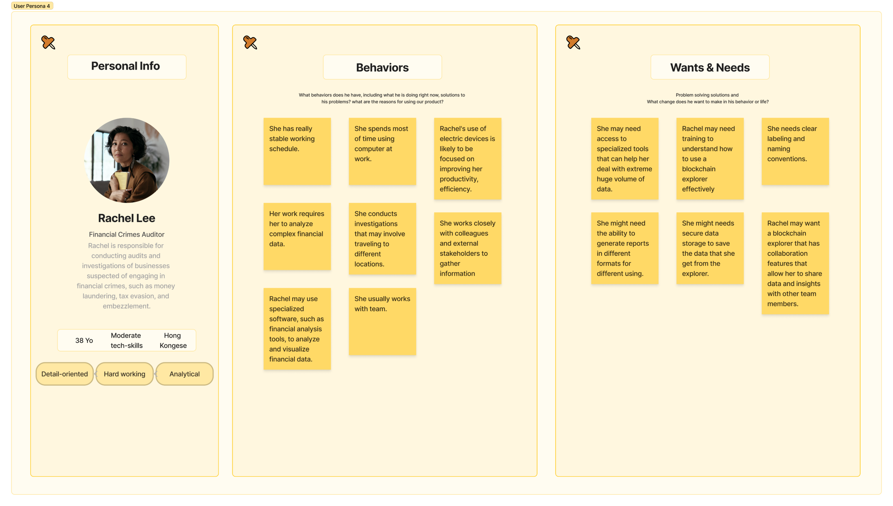
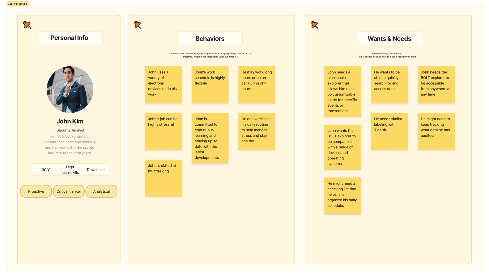

BAIFA
- BAIFA (BOLT AI Forensic Accounting and Auditing ) is like google in blockchain’s world. You can search information that has been uploaded to the blockchains here. Further more, BOLT-Explorer offers tool for user to trace transactions, audit data, check on black list to reduce the crimes.
- Project duration : 1 year
- Tool that I used
-

The Problem
Previously, cryptocurrency was often associated with criminal activities due to the lack of an effective solution for tracking and monitoring such incidents.
-

The Goal
To ensure cryptocurrency compliance, a secure system is needed to mitigate risks, enhance auditing accuracy, monitor blockchain transactions at scale, and provide user-friendly data management tools.
-
My role
UX Researcher
UX Designer
UI Designer
Brand Designer -

Responsibilities
Product, design, User research, Competitor audit, Wireframing, Mockup, Prototyping, CIS design.
user research
Understanding the user
Summary
I conducted interviews with a diverse group comprising government officials, detectives, and accountants. The objective was to gain insights into their pain points when dealing with cryptocurrency-related matters and identify potential solutions that can assist them in their work.
Pain Points
-
Identifying suspicious activity within vast amounts of data across various blockchains is a challenging task.
-
Producing financial reports and ensuring their accuracy is a labor-intensive task.
-
Many blockchain explorers utilize complex terminology that can be challenging for new users to understand and adapt to.
personas
 user journey map
Our aim is to identify the actual problems that users may encounter and proactively address them.
UIUX Design
Starting the design
Wireframe
Throughout this process, my primary objective is to develop a fully functional platform that truly caters to the needs of our users, enabling them to successfully accomplish their tasks.
Mockup
In this stage, I have developed design guidelines that align with our brand, placing emphasis on guiding users through the effective utilization of colors, varying font weights, icons, and other visual elements. The primary objective is to facilitate the seamless adoption of new tracing and auditing tools, enabling users to acclimate to them with ease.

Accessibility considerations
-

Multi-Languages
To cater to the needs of users worldwide.
-

Ｍulti-Currencies
To cater to the needs of users worldwide.
-

High-Contrast
Enhances readability and ensures a more comfortable reading experience for users with visual disabilities.

Let’s contact !
Jodie
E-mail: jodie0916@hotmail.com